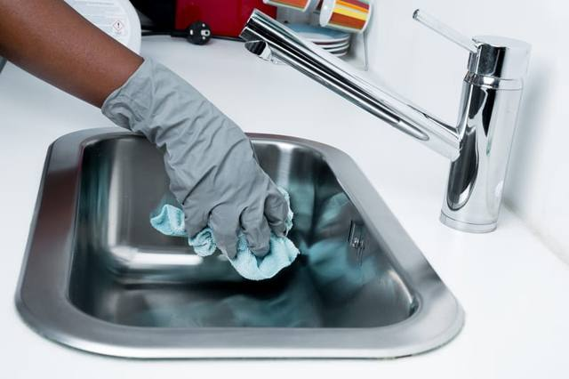
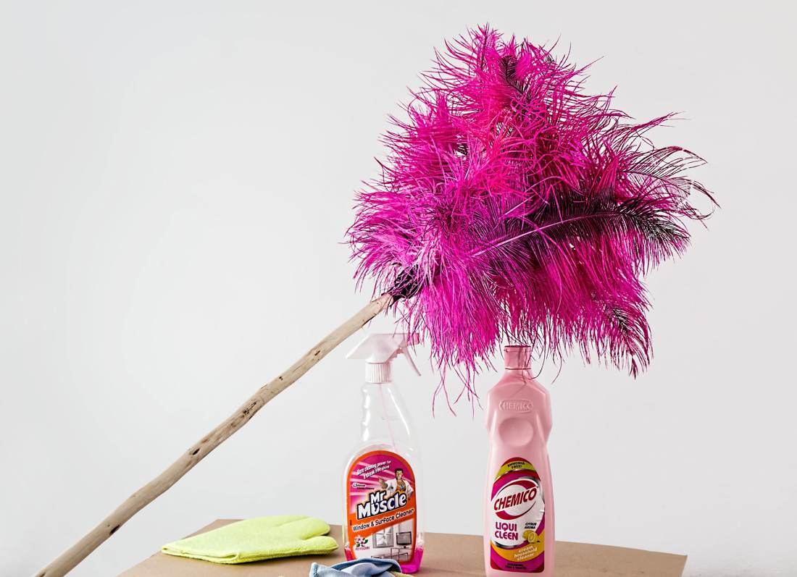
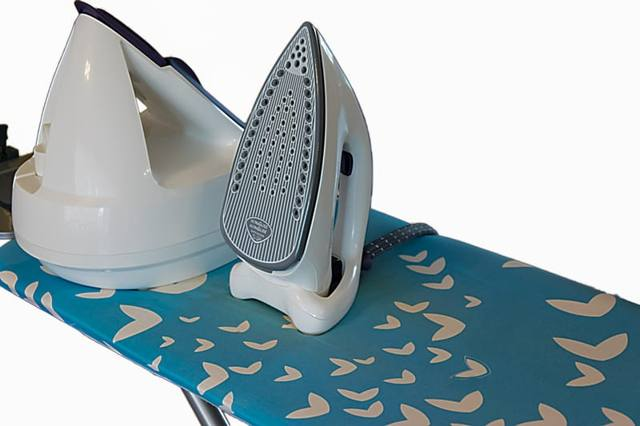
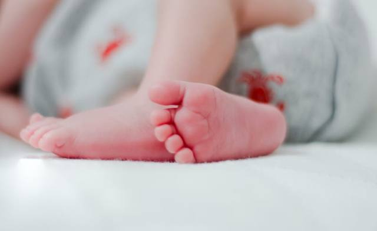
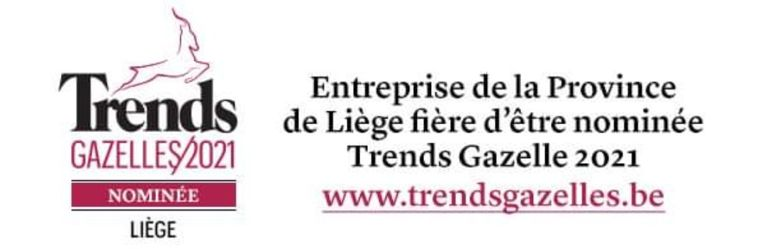

Aide ménagère à domicile
Entretien de votre habitation et autres services du quotidien.
Découvrir l’aide ménagèreBe-Services, entreprise de titres-services agréée, met à votre disposition une aide ménagère adaptée à vos besoins. Créateur de liberté depuis 2005.

Tous nos services sont payables en titres-services.

Entretien de votre habitation et autres services du quotidien.
Découvrir l’aide ménagère
Grands nettoyages de saison ou incapacité de travail temporaire.
Découvrir l’aide ponctuelle
105 titres-services gratuits pour les jeunes mamans indépendantes.
Voir les conditionsUn titre-service correspond à 1 heure de travail. Chaque particulier peut en commander jusqu’à 500 par an auprès de Sodexo.
| Tranche | Prix |
|---|---|
| 1er au 175e | 10,20 € |
| 176e au 400e | 11,20 € |
| 401e au 500e | 12,20 € |
En Wallonie, la réduction d’impôt de 10 % sur les 150 premiers titres ramène un titre de 10,20 € à 9,18 €.
Be-Services est une entreprise de titres-services et d’insertion (agrément Ei 20150), au service des particuliers dans toute la Wallonie.
Notre équipe de professionnelles qualifiées et formées assure un travail soigné. Depuis 2005, nous étudions attentivement chaque situation avant de vous proposer une aide ménagère. Suivi clientèle, service après-vente, assurance et flexibilité des horaires sont inclus.

Auprès de Sodexo, après une inscription gratuite. Be-Services gère votre contrat et le planning de l’aide ménagère.
L’entretien des jardins, le baby-sitting, le soin des animaux, l’entretien des parties communes et des locaux professionnels.
Oui, si elle vous convient. En cas de maladie ou de congé, un remplacement peut vous être proposé.
8 mois. Un titre non utilisé et encore valable peut être remboursé ou échangé.
Les accidents de travail sont couverts par l’assurance-loi. Les dégâts éventuels sont couverts par la responsabilité civile de Be-Services (franchise applicable).
Oui. Elle peut se présenter chez Be-Services pour passer au statut légal des titres-services.
Avec ou sans clients, un véhicule n’est pas nécessaire. Un plan Sine ou Impulsion est un avantage.
Postuler maintenantRéponse du lundi au vendredi, de 9 h à 17 h.
Liège
Quai Saint-Léonard 48
Herstal
Place Jean Jaurès 3/9
Votre aide ménagère repasse chez vous, ou vous confiez votre linge à notre atelier : les prestations en atelier sont également éligibles aux titres-services.
Décrivez-nous votre besoin : nous étudions votre situation et vous proposons l’aide adaptée.
Nous contacterContactez notre équipe : nous vérifions avec vous les conditions d’accès et nous organisons l’aide à domicile qui vous soulagera au quotidien.